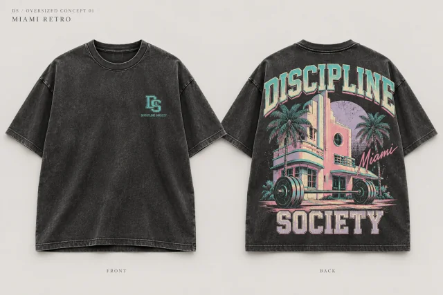
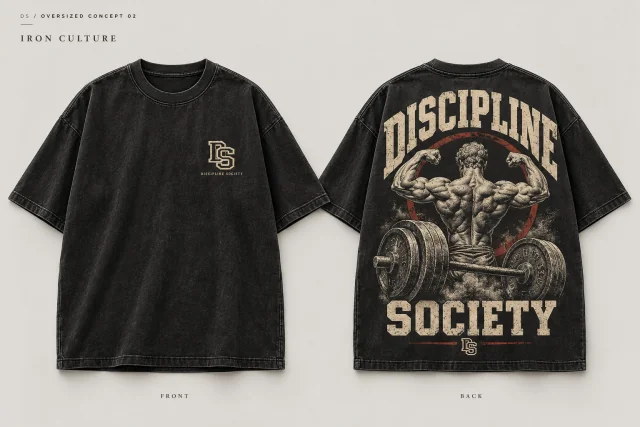
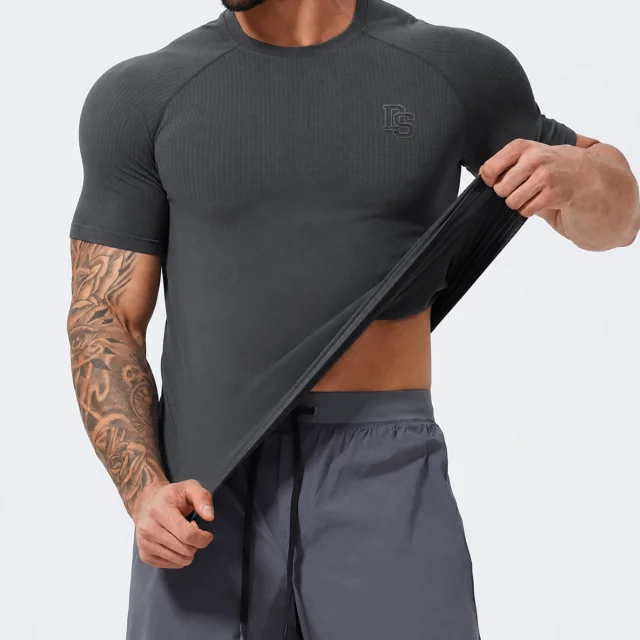
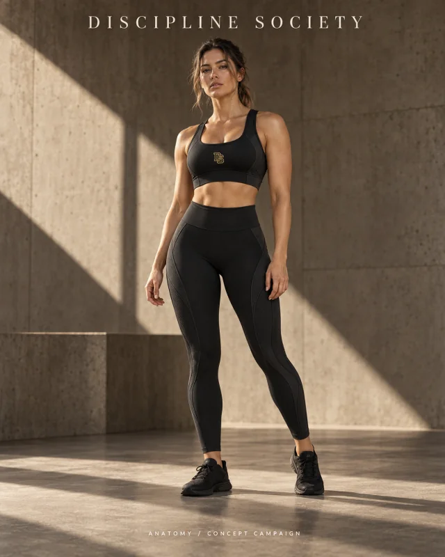
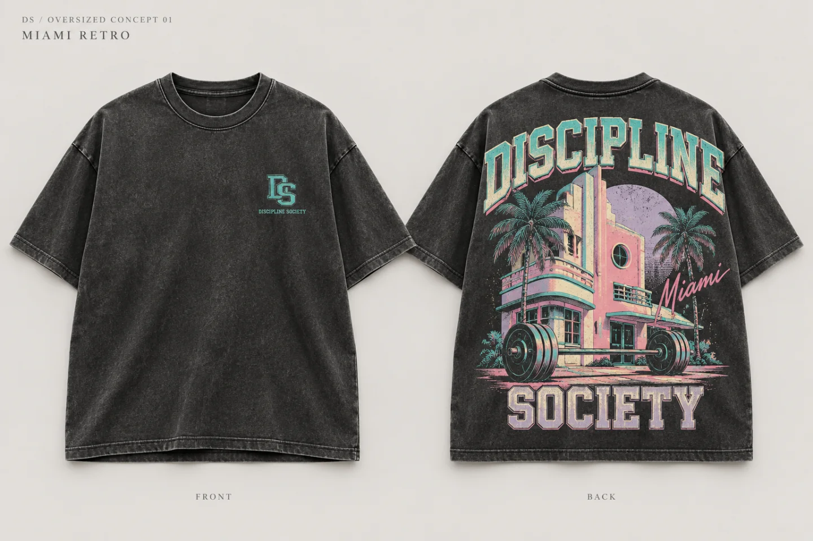

MIAMI RETRO
La ciudad en la espalda. El camino por delante.
CLOTHING & CULTURE
DISCIPLINE SOCIETY
La misma actitud.
Dentro y fuera del gimnasio.

Del volumen amplio a la segunda piel.
Cinco modelos, una identidad propia.
Conceptos. Aún no disponibles.
La ciudad en la espalda. El camino por delante.

El hierro deja huella.

Presencia sin levantar la voz.
El cuerpo marca las líneas.

Una misma identidad. Otra silueta.
Negro lavado.
Miami en la espalda.

Volumen relajado. Carácter pesado. Una gráfica con memoria de ciudad y cultura de gimnasio.
ESPECIFICACIÓN OBJETIVO
Diseño previo a muestra. La muestra aún no está fabricada; estas especificaciones están pendientes de validación. Prenda no disponible.
Hay algo que se queda contigo cuando sales del gimnasio. La constancia. Las ganas de seguir. La forma de ocupar la calle.
Discipline Society nace en ese cruce. Ropa con cultura de hierro y espíritu de asfalto.
Encuentra tu expresión